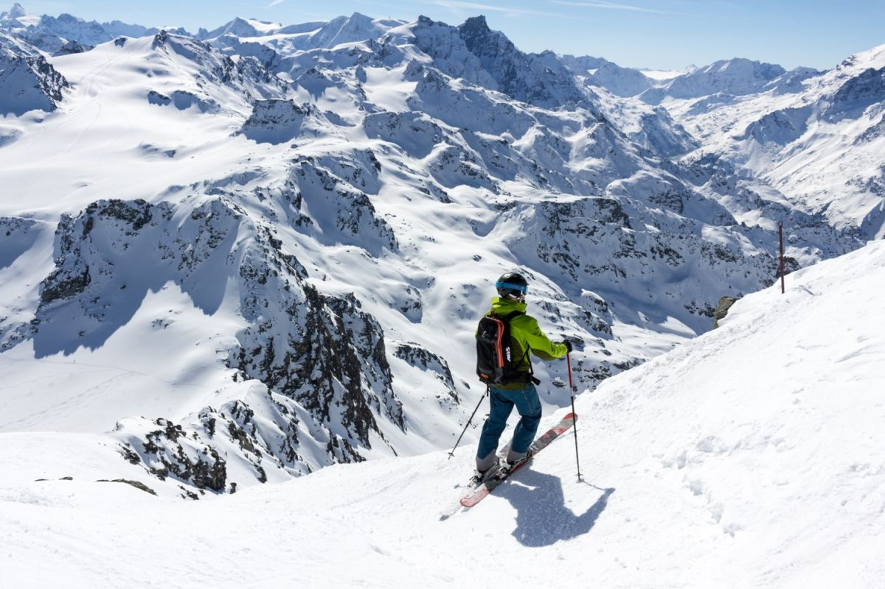
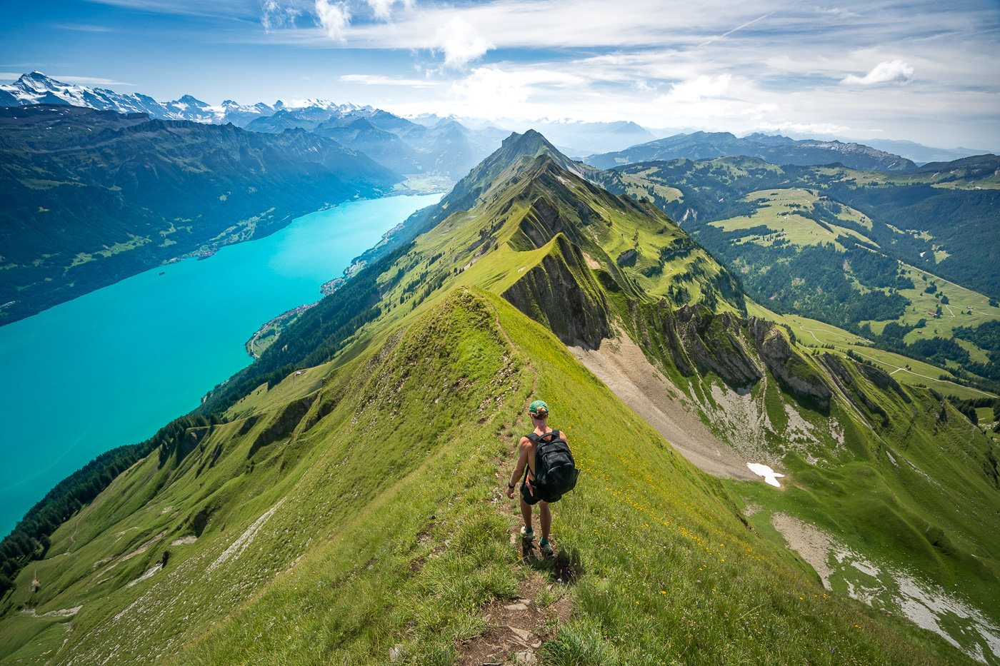
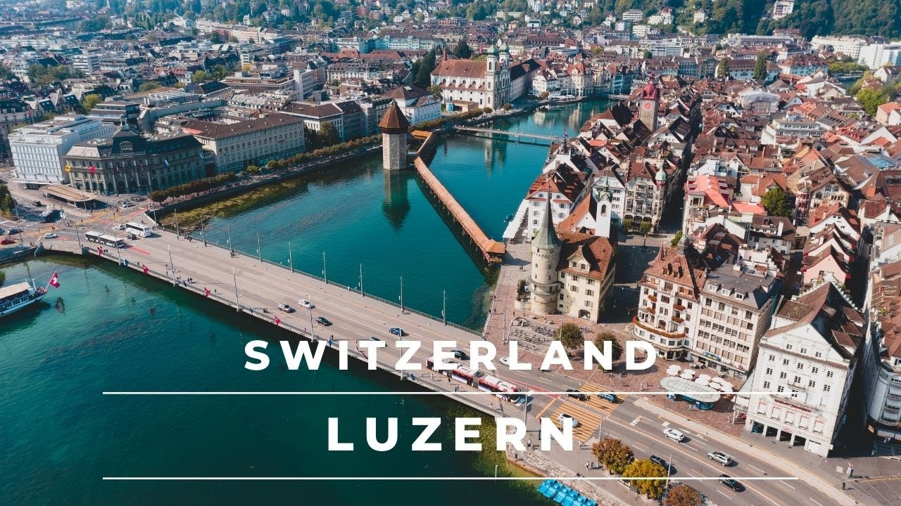
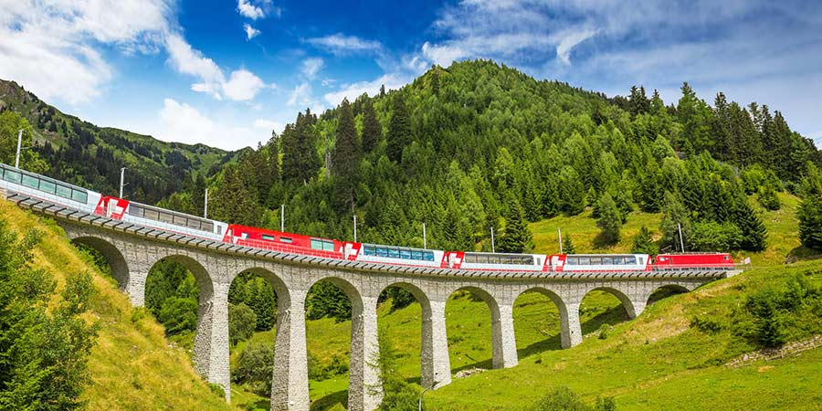

Unforgettable Activities in Switzerland
Switzerland offers a plethora of activities for all interests. Whether you're a thrill-seeker, a nature lover, or a culture enthusiast, you'll find something to keep you entertained.
Hit the Slopes
Switzerland is a skier's paradise. With world-class resorts like Zermatt, St. Moritz, and Davos, you can experience some of the best skiing and snowboarding in the world.
Hike Through Breathtaking Scenery
Switzerland boasts an extensive network of hiking trails, offering stunning views and diverse landscapes. Explore alpine meadows, glacier valleys, and charming villages.
Explore Picturesque Cities
Switzerland's charming cities like Lucerne, Zurich, and Bern offer a glimpse into the country's rich history and culture. Wander through medieval streets, admire historic architecture, and experience vibrant local life.
Take a Scenic Train Ride
Switzerland is renowned for its scenic train journeys. Embark on a breathtaking ride on the Glacier Express, Bernina Express, or GoldenPass Line, and witness the beauty of the Swiss Alps in style.